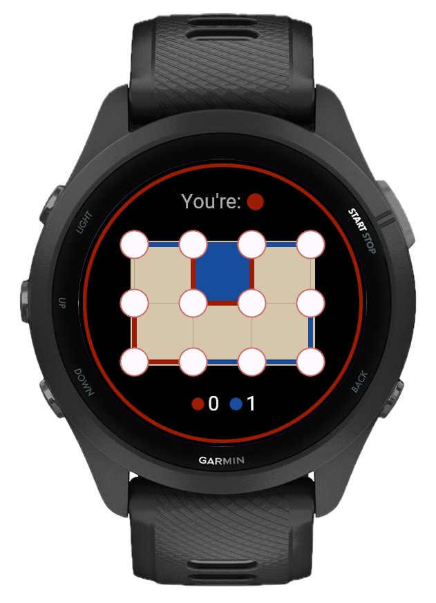
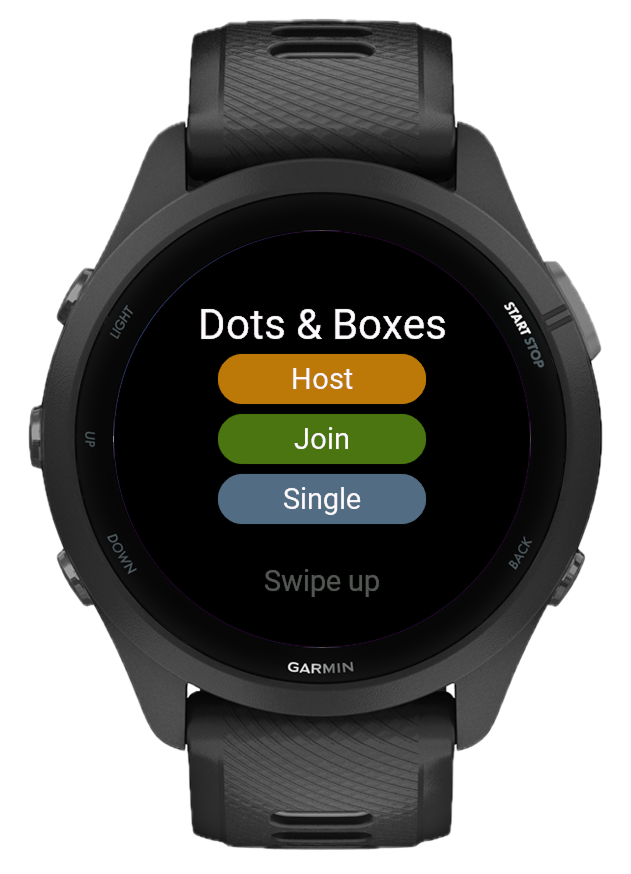
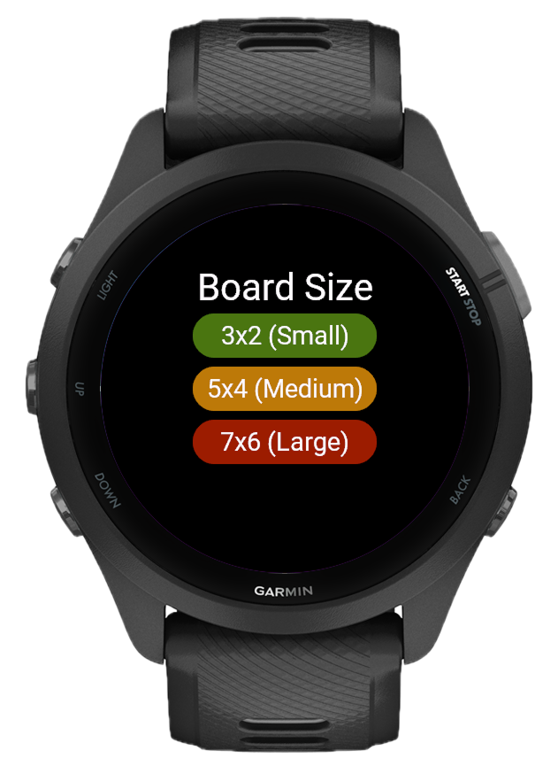
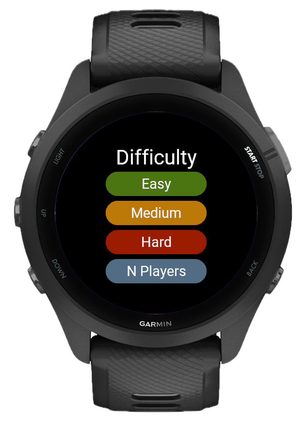
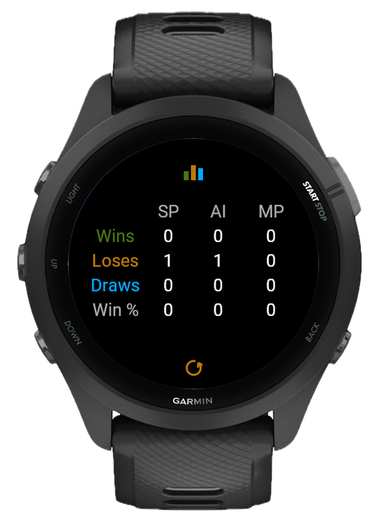

Remember drawing lines on graph paper during class? Dots and Boxes brings that back, but on your Garmin watch. Simple rules, surprisingly deep strategy, and an AI that knows when to let you close a box and when to trap you.
Host, join, or go solo
Play against the AI when you're on your own, or connect two Garmin watches over ANT+ for a head-to-head match. You can also pass the watch back and forth for a local game. One tap to start.

Pick the size that fits
Small for a quick round, medium for a proper game, large when you want something that takes real planning. The board adapts to your watch display, so every dot and line stays clear no matter which size you choose.

The AI learns your tricks
Easy mode plays fair. Medium avoids obvious traps. Hard mode thinks in chains, sacrificing one box to take three. It knows the endgame patterns and forces you to play carefully from the first line.

Tap two dots, draw a line
The controls are intuitive. Tap two adjacent dots to place your line. Complete the fourth side of a box and it fills with your color, giving you another turn. Chain multiple boxes together and watch your score jump. The score stays visible at the bottom so you always know where you stand.
Every game counts
Wins, losses, draws, and win percentage tracked separately for single player, AI, and multiplayer. Check your stats anytime to see how you're improving, especially against the harder difficulty levels.

A thinking game for your wrist
Three board sizes, three difficulty levels, and a game that rewards patience over speed. No phone, no internet, just dots, lines, and the satisfaction of closing a chain. No phone, no setup, just tap and play. Works on 70+ Garmin models.
What's new
- Fixed design issues
- Added support for additional devices
- Wireless multiplayer with simple code pairing
- 3 AI difficulty levels: Easy, Medium, Hard
- Local N-player pass-and-play mode
- 3 board sizes: Small, Medium, Large
- Two-tap line drawing
- Live in-game score tracking
- All-time stats split by mode
- Haptic feedback on key moments
- Automatic rematches
- Player disconnect detection
- Touch and button support on 70+ Garmin devices